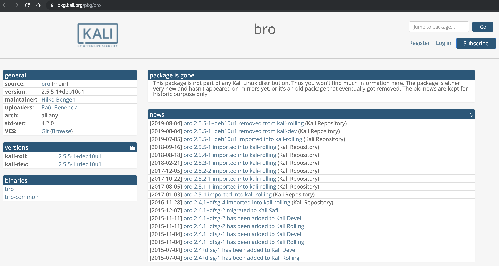

实验
课件内配套案例：pcap attack trace实验使用的pcap包下载
使用 zeek 来完成取证分析
Kali Rolling 发行版注意事项
根据 Kali 官方软件包维护历史页面 显示：

自 2019-08-04 之后，Bro 的软件包已经从 Kali 官方软件源镜像仓库中移除，因此建议按照 Zeek 官方安装指南 在 Kali 系统上安装和配置 Zeek 。
安装 zeek
# 2019-08-04 之前
apt-get install bro bro-aux
# 2019-08-04 之后
# ref: https://docs.zeek.org/en/stable/install/install.html#prerequisites
# 如果系统使用的 Python 版本是 2.x
apt update && apt-get install cmake make gcc g++ flex bison libpcap-dev libssl-dev python-dev swig zlib1g-dev python-ipaddress
# 如果系统使用的 Python 版本是 3.x
# apt update && apt-get install cmake make gcc g++ flex bison libpcap-dev libssl-dev python-dev swig zlib1g-dev
# 下载 zeek 源码包
# 以下默认使用中国传媒大学校内可访问 URL 加速下载
# 校外用户或希望使用当前官网最新版本用户请自行去 zeek 官网下载
wget http://sec.cuc.edu.cn/ftp/soft/zeek-3.0.0.tar.gz
# 解压缩 zeek 源码
tar zxf zeek-3.0.0.tar.gz
# 进入 zeek 源码解压缩后目录
cd zeek-3.0.0
# 生成构建脚本
./configure
# 构建成功后安装到构建脚本默认指定路径 /usr/local/zeek
make && make install
# 将 zeek 可执行文件目录添加到当前用户的 PATH 环境变量
if [[ $(grep -c '/usr/local/zeek/bin' ~/.bashrc) -eq 0 ]];then echo 'export PATH=/usr/local/zeek/bin:$PATH' >> ~/.bashrc;fi
# 重新读取 ~/.bashrc 以使环境变量设置即时生效
source ~/.bashrc
实验环境基本信息
cat /etc/os-release
# PRETTY_NAME="Kali GNU/Linux Rolling"
# NAME="Kali GNU/Linux"
# ID=kali
# VERSION="2019.3"
# VERSION_ID="2019.3"
# VERSION_CODENAME="kali-rolling"
# ID_LIKE=debian
# ANSI_COLOR="1;31"
# HOME_URL="https://www.kali.org/"
# SUPPORT_URL="https://forums.kali.org/"
# BUG_REPORT_URL="https://bugs.kali.org/"
uname -a
# Linux firewall 5.2.0-kali2-amd64 #1 SMP Debian 5.2.9-2kali1 (2019-08-22) x86_64 GNU/Linux
zeek -v
# zeek version 3.0.0
编辑 zeek 配置文件
- 编辑
/usr/local/zeek/share/zeek/site/local.zeek，在文件尾部追加两行新配置代码
@load frameworks/files/extract-all-files
@load mytuning.zeek
- 在
/usr/local/zeek/share/zeek/site目录下创建新文件mytuning.zeek，内容为：
redef ignore_checksums = T;
使用 zeek 自动化分析 pcap 文件
zeek -r attack-trace.pcap /usr/local/zeek/share/zeek/site/local.zeek
出现警告信息 WARNING: No Site::local_nets have been defined. It's usually a good idea to define your local networks. 对于本次入侵取证实验来说没有影响。
如果要解决上述警告信息，也很简单，同样是编辑 mytuning.zeek ，增加一行变量定义即可
redef Site::local_nets = { 192.150.11.0/24 };
注意添加和不添加上述一行变量定义除了 zeek 运行过程中是否会产生警告信息的差异，增加这行关于本地网络 IP 地址范围的定义对于本次实验来说会新增 2 个日志文件，会报告在当前流量（数据包文件）中发现了本地网络IP和该IP关联的已知服务信息。
在 attack-trace.pcap 文件的当前目录下会生成一些 .log 文件和一个 extract_files 目录，在该目录下我们会发现有一个文件。
file extract_files/extract-1240198114.648099-FTP_DATA-FHUsSu3rWdP07eRE4l
# extract_files/extract-1240198114.648099-FTP_DATA-FHUsSu3rWdP07eRE4l: PE32 executable (GUI) Intel 80386, for MS Windows
将该文件上传到 virustotal 我们会发现匹配了一个 历史扫描报告 ，该报告表明这是一个已知的后门程序！
至此，基于这个发现就可以进行逆向倒推，寻找入侵线索了。
通过阅读 /usr/local/zeek/share/zeek/base/files/extract/main.zeek 的源代码
function on_add(f: fa_file, args: Files::AnalyzerArgs)
{
if ( ! args?$extract_filename )
args$extract_filename = cat("extract-", f$last_active, "-", f$source,
"-", f$id);
f$info$extracted = args$extract_filename;
args$extract_filename = build_path_compressed(prefix, args$extract_filename);
f$info$extracted_cutoff = F;
mkdir(prefix);
}
我们了解到该文件名的最右一个-右侧对应的字符串 FHUsSu3rWdP07eRE4l 是 files.log 中的文件唯一标识。
通过查看 files.log ，发现该文件提取自网络会话标识（ zeek 根据 IP 五元组计算出的一个会话唯一性散列值）为 C0fESj3vbdj3jUOVkd 的 FTP 会话。
该 C0fESj3vbdj3jUOVkd 会话标识在 conn.log 中可以找到对应的 IP 五元组信息。
通过 conn.log 的会话标识匹配，我们发现该PE文件来自于IPv4地址为：98.114.205.102 的主机。
Zeek 的一些其他技巧
ftp.log中默认不会显示捕获的 FTP 登录口令，我们可以通过在/usr/local/zeek/share/zeek/site/mytuning.zeek中增加以下变量重定义来实现：
redef FTP::default_capture_password = T;
- 使用正确的分隔符进行过滤显示的重要性
# 从头开始查看日志文件，显示前1行
head -n1 conn.log
# Bro的日志文件默认使用的分隔符显示为ASCII码\x09，通过以下命令可以查看该ASCII码对应的“可打印字符”
echo -n -e '\x09' | hexdump -c
# 使用awk打印给定日志文件的第N列数据
awk -F '\t' '{print $3}' conn.log
- 查看Bro的超长行日志时的横向滚动技巧
less -S conn.log
- 使用
zeek-cut更“优雅”的查看日志中关注的数据列
# 查看conn.log中所有可用的“列名”
grep ^#fields conn.log | tr '\t' '\n'
# 按照“列名”输出conn.log中我们关注的一些“列”
zeek-cut ts id.orig_h id.orig_p id.resp_h id_resp_p proto < conn.log
# 将UNIX时间戳格式转换成人类可读的时间（但该方法对于大日志文件处理性能非常低）
zeek-cut -d < conn.log